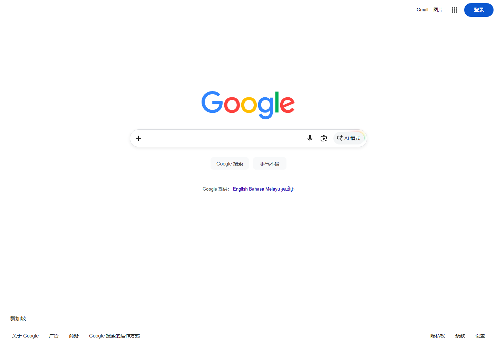

“Google 打不开”可能指搜索首页无法加载，也可能是 Gmail、Drive、YouTube、账号登录或验证码页面出现异常。虽然这些产品属于同一账号体系，却由不同域名和功能组件组成。只测试一个页面，无法判断是全部服务异常、单个产品故障，还是浏览器没有正确保存登录状态。
一、先区分搜索、账号与单项服务
第一步是把“打不开”写成可验证的现象：地址栏显示什么域名？浏览器给出什么错误代码？首页、搜索结果、图片搜索和账号登录是否都失败？其他 Google 服务能否打开？发生在所有设备还是一台设备？这些信息决定后续检查顺序。
| 现象 | 优先方向 | 对照测试 |
|---|---|---|
| 首页完全无法连接 | DNS、网络路径、证书 | 同网络另一设备 |
| 首页能开，搜索无结果 | 脚本、Cookie、查询参数 | 无痕窗口搜索普通关键词 |
| 登录后又回到登录页 | Cookie、时间、登录策略 | 官方账号页与另一浏览器 |
| 只有 Gmail 或 Drive 异常 | 单项服务状态、扩展、权限 | 搜索首页与对应状态页 |
| 频繁出现验证码 | 异常流量提示、共享网络、浏览器状态 | 停止自动请求后稍候重试 |
二、确认正确地址与服务状态
在地址栏手动输入 https://www.google.com/，不要通过来源不明的下载页或镜像页进入。页面会根据地区和语言显示不同界面，这是正常现象。需要判断 Gmail、Drive 等服务是否发生已知事件时，可查看 Google Workspace Status Dashboard；搜索首页没有等同的完整公开状态面板，因此仍需做本地对照。

如果只有一个产品异常，优先查该产品帮助中心和状态，而不是立即调整整个系统网络。如果多个 Google 域名同时失败，再检查本机、路由器和网络环境。
三、浏览器问题按什么顺序修
- 使用无痕窗口：无痕模式可以快速判断旧缓存、Cookie 或扩展是否参与故障。
- 暂停网页改写类扩展：广告过滤、脚本管理、搜索增强、隐私插件都可能改变搜索结果或登录流程。
- 只清理相关站点数据：先删除 google.com 与 accounts.google.com 的站点数据，再重新打开官方页面。
- 检查 JavaScript 与 Cookie：账号登录和人机验证通常需要这些基础功能。若公司策略禁止，应联系管理员。
- 更新浏览器：过旧版本可能缺少当前安全协议或网页功能支持。更新后完全退出并重启。
- 恢复默认搜索设置：若输入关键词总被跳转到陌生网站，检查默认搜索引擎、启动页和可疑扩展。
若无痕窗口正常，普通窗口失败，可逐个关闭扩展并清理站点数据；若所有浏览器都失败，继续检查系统层。不要一开始就安装所谓“Google 修复工具”，陌生程序可能带来额外风险。
四、DNS、证书与连接错误如何判断
浏览器提示“找不到服务器”时，先测试其他网站并运行 nslookup www.google.com。如果没有解析结果，检查路由器、系统 DNS 和安全软件。修改 DNS 前要记录原设置，单位或学校网络应遵守管理员要求。刷新 DNS 缓存只能处理旧记录，不会修复所有上游网络问题。
若页面提示证书无效、连接不安全或日期错误，先校准系统时间、日期和时区。不要选择忽略证书警告继续输入账号。安全软件的 HTTPS 检查、公共 Wi‑Fi 登录页或企业网关也可能改变证书链，应由网络管理员确认。
浏览器显示超时，不一定是 DNS。域名可能已经解析，但连接途中没有及时建立。可以用另一浏览器、另一设备和另一网络进行三组对照：只有一台设备失败，查本机代理、防火墙和扩展；同一网络全部失败，查路由器与上游；所有网络都失败但状态页有事件，则等待官方处理。
五、登录循环、验证码和账号恢复
登录后重新回到登录页，常见原因包括 Cookie 无法保存、系统时间不准、浏览器阻止跨站流程，或账号需要额外确认。先允许官方账号域名保存必要数据，在无痕窗口测试，并确认使用的是正确账号。多个账号同时登录时，可先退出其他账号，减少会话混淆。
频繁出现验证码时，停止自动刷新、批量查询和浏览器自动化，等待一段时间后再试。共享网络中其他设备的异常请求也可能影响体验。验证码应在官方页面完成，不要使用代过服务。若收到“可疑登录”或安全提醒，进入 Google 账号安全页面检查近期活动、恢复邮箱和设备，不要点击陌生邮件中的短链接。
忘记密码或无法完成二次验证时，应使用官方账号恢复流程。尽量在常用设备、常用浏览器和常用网络环境中操作，并准确回答恢复问题。任何人都无法通过一条所谓内部链接保证恢复账号。
六、手机端与应用内网页的特殊问题
手机浏览器打不开时，检查飞行模式、移动数据权限、省流量模式、私有 DNS 与系统时间。应用内置浏览器可能不支持完整登录流程，遇到空白或无法返回时，改用系统浏览器打开官方链接。Android 还应保持 Chrome 与 Android System WebView 为受支持版本；iPhone/iPad 可检查 Safari 的内容限制和网络配置。
Google App 能打开但浏览器不行，说明应优先检查浏览器；两者都失败，则回到系统网络。只有语音搜索、图片上传或定位功能失败时，要单独检查麦克风、照片和位置权限，不应把功能权限问题误判为整个 Google 无法访问。
七、2026 标准排查清单
- 记录完整错误、发生时间、具体服务和网址。
- 从官方域名重新进入，排除旧书签和跳转页。
- 用无痕窗口做一次搜索与登录对照。
- 暂停内容拦截、脚本和搜索改写扩展。
- 清理相关站点数据，更新并重启浏览器。
- 核对系统时间、证书提示与 DNS 解析。
- 比较另一设备、另一浏览器、另一网络的结果。
- 只有单项服务失败时，查看其状态与帮助中心。
八、常见误区与有效反馈
误区一是把所有失败都归因于网速。网页能否稳定登录与带宽数字并非同一指标。误区二是同时改 DNS、代理、浏览器和防火墙，最后无法知道哪项有效。误区三是忽略错误原文，只凭截图标题搜索。误区四是把账号验证码交给第三方“远程修复”。
向管理员或官方支持反馈时，应写明：问题服务、完整网址、时间、设备和浏览器版本、错误代码、是否在其他网络复现、已完成的测试。截图需遮住邮箱、搜索记录、恢复信息和验证码。保留这些基本信息，通常能显著减少来回沟通。